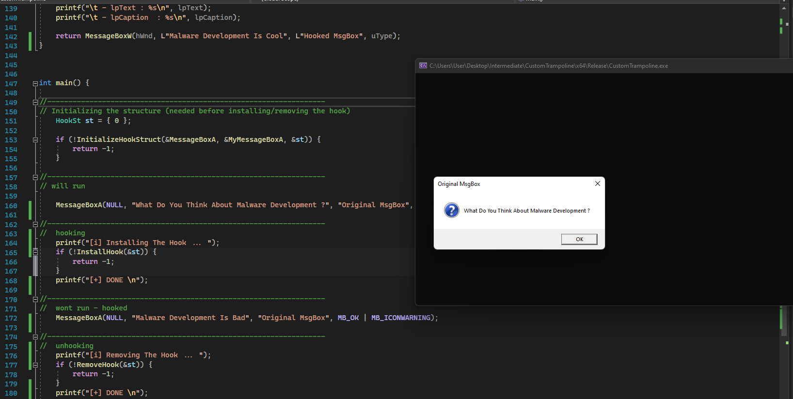
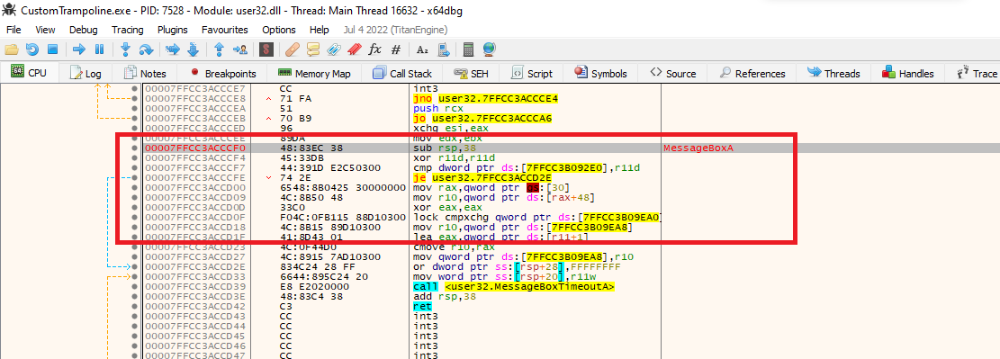
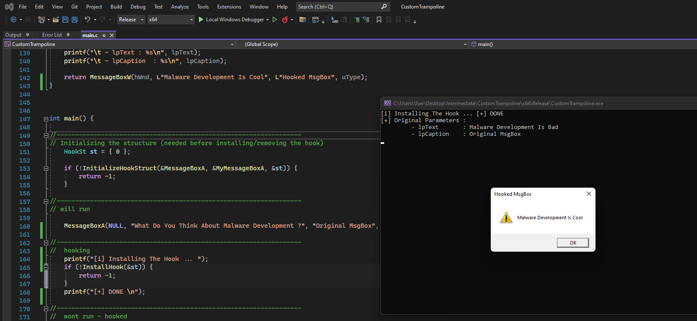
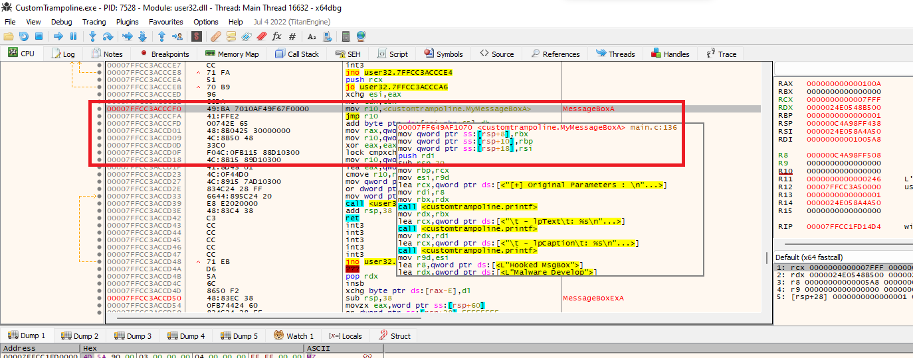
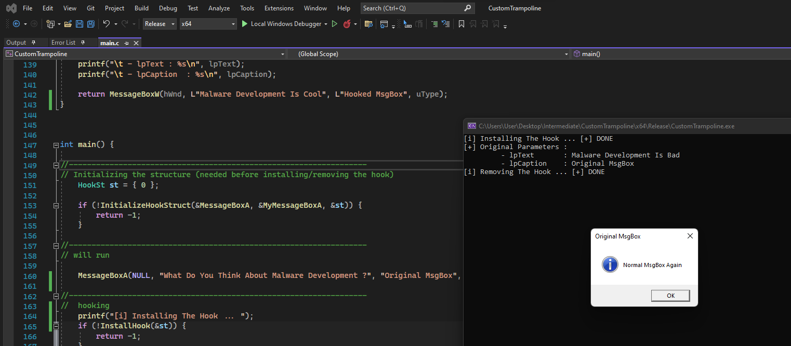

Introduction
So far, open source libraries have been used to implement API hooking. However, a major issue with this approach is that the source code for these libraries is publicly available, making it straightforward for security researchers and security product vendors to build IoCs. For this reason, API hooking will be implemented manually in this module, although not as sophisticated as the previously demonstrated libraries, but enough to achieve the desired result without IoCs.
Custom hooking code can be a better option if the intent is to hook a single function. This avoids the additional effort of linking other libraries, and avoiding the additional weight these libraries add to the binary's size.
Creating The Trampoline Shellcode
One of the ways to hook a function is to overwrite its first few instructions with new ones. These new instructions are the trampoline which is responsible for altering the execution flow of the function to the replacement function. This trampoline is typically a small jump shellcode that executes a jmp instruction to the address of the function to be executed. To execute the jmp instruction, the address that needs to be jumped to must be saved inside of a register. In the presented example, the register will be eax on a 32-bit processor and r10 on a 64-bit processor. A mov instruction will be used to save the address inside of these registers.
This is all that is needed for the trampoline, a mov and a jmp instruction. Diving deeper into how these instructions are used is not the focus of this module. If one would like to explore them further, felixcloutier.com/x86/mov and felixcloutier.com/x86/jmp can provide more details.
64-bit Jump Shellcode
The 64-bit jump shellcode should be as follows:
mov r10, pAddress
jmp r10Where pAddres is the address of the function to jump to (e.g. 0x0000FFFEC32A300). To use these instructions in the code they must first be converted to opcode.
0x49, 0xBA, 0x00, 0x00, 0x00, 0x00, 0x00, 0x00, 0x00, 0x00, // mov r10, pAddress
0x41, 0xFF, 0xE2 // jmp r1032-bit Jump Shellcode
And the 32-bit version:
mov eax, pAddress
jmp eaxAgain, convert the instructions to opcode.
0xB8, 0x00, 0x00, 0x00, 0x00, // mov eax, pAddress
0xFF, 0xE0 // jmp eaxNote that pAddress is represented as NULL, which explains the 0x00 sequence. These 0x00 opcodes are placeholders that will be overwritten during runtime.
Retrieving pAddress
Since the hooks are installed during runtime, the pAddress value must be retrieved and added to the shellcode during runtime. The retrieval of the address can be done using GetProcAddress and once that's completed, memcpy is used to copy the address to the correct location in the shellcode.
64-bit Patching
uint8_t uTrampoline[] = {
0x49, 0xBA, 0x00, 0x00, 0x00, 0x00, 0x00, 0x00, 0x00, 0x00, // mov r10, pFunctionToRun
0x41, 0xFF, 0xE2 // jmp r10
};
uint64_t uPatch = (uint64_t)pAddress;
memcpy(&uTrampoline[2], &uPatch, sizeof(uPatch)); // copying the address to the offset '2' in uTrampoline32-bit Patching
uint8_t uTrampoline[] = {
0xB8, 0x00, 0x00, 0x00, 0x00, // mov eax, pFunctionToRun
0xFF, 0xE0 // jmp eax
};
uint32_t uPatch = (uint32_t)pAddress;
memcpy(&uTrampoline[1], &uPatch, sizeof(uPatch)); // copying the address to the offset '1' in uTrampolineAs previously mentioned, pAddress is the address of the function to jump to. The uint32_t and uint64_t data types are used to ensure that the address is the correct number of bytes, that is 4 bytes for 32-bit machines and 8 bytes for 64-bit machines. uint32_t is of size 4 bytes, and uint64_t is of size 8 bytes. memcpy will then place the address into the trampoline by overwriting the 0x00 placeholder bytes.
Writing The Trampoline
Before overwriting the target function's first few instructions with the prepared shellcode, it is important to mark the memory where the trampoline will be written as writable. In most cases, the memory region will not be writable, requiring the VirtualProtect WinAPI to change the memory permissions to PAGE_EXECUTE_READWRITE. It is worth noting that it must be writable and executable because when the program calls the function, it needs to execute instructions that will not be permitted on write-only memory.
With that in mind, the trampoline should first modify the permissions of the target function and then copy the shellcode over.
// Changing the memory permissons at 'pFunctionToHook' to be PAGE_EXECUTE_READWRITE
if (!VirtualProtect(pFunctionToHook, sizeof(uTrampoline), PAGE_EXECUTE_READWRITE, &dwOldProtection)) {
return FALSE;
}
// Copying the trampoline shellcode to 'pFunctionToHook'
memcpy(pFunctionToHook, uTrampoline, sizeof(uTrampoline));Where pFunctionToHook is the address of the function to hook, and uTrampoline is the jump shellcode.
Unhooking
When the hooked function is called, the trampoline shellcode should be able to work for both 64-bit and 32-bit architectures. However, the unhooking of the hooked function has not been discussed. To do this, the original bytes which were overwritten by the trampoline should be restored by using a buffer containing these bytes that were created prior to the installation of the trampoline shellcode. This buffer should then be used as the source buffer in the memcpy function when unhooking the function.
memcpy(pFunctionToHook, pOriginalBytes, sizeof(pOriginalBytes));Where pFunctionToHook is the address of the hooked function and pOriginalBytes is the buffer that's holding the original bytes of the function which should have been saved before hooking, and can be done via a memcpy call. The size of the pOriginalBytes buffer should be the same as the trampoline shellcode size that way only the shellcode is overwritten. Lastly, it's recommended to revert the memory permissions which can be done via the code snippet below.
if (!VirtualProtect(pFunctionToHook, sizeof(uTrampoline), dwOldProtection, &dwOldProtection)) {
return FALSE;
}Where dwOldProtection is the old memory permission returned by the first VirtualProtect call.
HookSt Structure
To make the implementation easier, the HookSt structure was created. This structure will contain the needed information to hook and unhook a certain function. The value TRAMPOLINE_SIZE is set to 13 if the program is set to be compiled as a 64-bit application, and its set to 7 if the program is to be compiled in 32-bit mode. The values 13 and 7 are the sizes of the trampoline shellcode, denoted in the uTrampoline variable previously shown, in 64-bit and 32-bit systems, respectively.
typedef struct _HookSt{
PVOID pFunctionToHook; // address of the function to hook
PVOID pFunctionToRun; // address of the function to run instead
BYTE pOriginalBytes[TRAMPOLINE_SIZE]; // buffer to keep some original bytes (needed for cleanup)
DWORD dwOldProtection; // holds the old memory protection of the "function to hook" address (needed for cleanup)
}HookSt, *PHookSt;Setting the TRAMPOLINE_SIZE value is done via the following preprocessor code
// if compiling as 64-bit
#ifdef _M_X64#define TRAMPOLINE_SIZE 13#endif // _M_X64// if compiling as 32-bit
#ifdef _M_IX86#define TRAMPOLINE_SIZE 7#endif // _M_IX86Installing Hooks
The following function uses HookSt to install hooks.
BOOL InstallHook (IN PHookSt Hook) {
#ifdef _M_X64// 64-bit trampoline
uint8_t uTrampoline [] = {
0x49, 0xBA, 0x00, 0x00, 0x00, 0x00, 0x00, 0x00, 0x00, 0x00, // mov r10, pFunctionToRun
0x41, 0xFF, 0xE2 // jmp r10
};
// Patching the shellcode with the address to jump to (pFunctionToRun)
uint64_t uPatch = (uint64_t)(Hook->pFunctionToRun);
// Copying the address of the function to jump to, to the offset '2' in uTrampoline
memcpy(&uTrampoline[2], &uPatch, sizeof(uPatch));
#endif // _M_X64#ifdef _M_IX86// 32-bit trampoline
uint8_t uTrampoline[] = {
0xB8, 0x00, 0x00, 0x00, 0x00, // mov eax, pFunctionToRun
0xFF, 0xE0 // jmp eax
};
// Patching the shellcode with the address to jump to (pFunctionToRun)
uint32_t uPatch = (uint32_t)(Hook->pFunctionToRun);
// Copying the address of the function to jump to, to the offset '1' in uTrampoline
memcpy(&uTrampoline[1], &uPatch, sizeof(uPatch));
#endif // _M_IX86
// Placing the trampoline function - installing the hook
memcpy(Hook->pFunctionToHook, uTrampoline, sizeof(uTrampoline));
return TRUE;
}Removing Hooks
The function below uses HookSt to remove hooks.
BOOL RemoveHook (IN PHookSt Hook) {
DWORD dwOldProtection = NULL;
// Copying the original bytes over
memcpy(Hook->pFunctionToHook, Hook->pOriginalBytes, TRAMPOLINE_SIZE);
// Cleaning up our buffer
memset(Hook->pOriginalBytes, '\0', TRAMPOLINE_SIZE);
// Setting the old memory protection back to what it was before hooking
if (!VirtualProtect(Hook->pFunctionToHook, TRAMPOLINE_SIZE, Hook->dwOldProtection, &dwOldProtection)) {
printf("[!] VirtualProtect Failed With Error : %d \n", GetLastError());
return FALSE;
}
// Setting all to null
Hook->pFunctionToHook = NULL;
Hook->pFunctionToRun = NULL;
Hook->dwOldProtection = NULL;
return TRUE;
}Populating The HookSt Structure
The InitializeHookStruct function is used to populate the HookSt structure with the necessary information to perform hooking.
BOOL InitializeHookStruct(IN PVOID pFunctionToHook, IN PVOID pFunctionToRun, OUT PHookSt Hook) {
// Filling up the struct
Hook->pFunctionToHook = pFunctionToHook;
Hook->pFunctionToRun = pFunctionToRun;
// Save original bytes of the same size that we will overwrite (that is TRAMPOLINE_SIZE)
// This is done to be able to do cleanups when done
memcpy(Hook->pOriginalBytes, pFunctionToHook, TRAMPOLINE_SIZE);
// Changing the protection to RWX so that we can modify the bytes
// We are saving the old protection to the struct (to re-place it at cleanup)
if (!VirtualProtect(pFunctionToHook, TRAMPOLINE_SIZE, PAGE_EXECUTE_READWRITE, &Hook->dwOldProtection)) {
printf("[!] VirtualProtect Failed With Error : %d \n", GetLastError());
return FALSE;
}
return TRUE;
}The Main function
The main function below calls the previously demonstrated functions and hooks the MessageBoxA WinAPI.
int main() {
// Initializing the structure (needed before installing/removing the hook)
HookSt st = { 0 };
if (!InitializeHookStruct(&MessageBoxA, &MyMessageBoxA, &st)) {
return -1;
}
// will run
MessageBoxA(NULL, "What Do You Think About Malware Development ?", "Original MsgBox", MB_OK | MB_ICONQUESTION);
// hooking
if (!InstallHook(&st)) {
return -1;
}
// wont run - hooked
MessageBoxA(NULL, "Malware Development Is Bad", "Original MsgBox", MB_OK | MB_ICONWARNING);
// unhooking
if (!RemoveHook(&st)) {
return -1;
}
// will run - hook disabled
MessageBoxA(NULL, "Normal MsgBox Again", "Original MsgBox", MB_OK | MB_ICONINFORMATION);
return 0;
}Demo
Due to the trampoline-based hook, it is impossible to have a global original function pointer be called to resume execution. Therefore, the MessageBoxW WinAPI will be called in the MyMessageBoxA detour function.
Running the first MessageBoxA (Unhooked).

The original MessageBoxA instructions before hooking.

Running the second MessageBoxA (Hooked).

The trampoline shellcode is in memory.

Running the third MessageBoxA (Unhooked).
